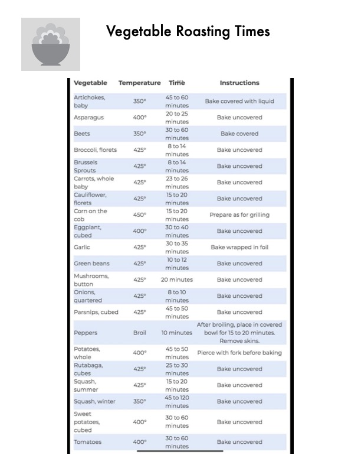

Vegetable Roasting Times

Original cookbook page 681
Ingredients
- 45 to 60
- 20 to 25
- 30 to 60
- 23 to 26
- 15 to 20
- 30 to 40
- 30 to 35
- 10 to 12
- 20 minutes
- 8 told
- 45 to 50
- 10 minutes
- 25 to 30
- 45 to 120
Instructions
- AEE ONES, 350° aS uAeo Bake covered with liquid
- Asparagus 400° 2 ea 7 Bake uncovered minutes
- Beets 350° =" ae Bake covered minutes
- Broccoli, florets 425° nie is Bake uncovered minutes
- erueeee 425° om sa Bake uncovered
- Cauliflower, 425° ete 20 Bake uncovered
- Conan te 450° bk = Prepare as for grilling
- Egapiant, 400° sae ose Bake uncovered
- Garlic 425° = mee Bake wrapped in foil minutes
- Green beans 425° 0 tote Bake uncovered minutes
- MuRnraoms, 425° 20 minutes Bake uncovered
- Cnions 425° ot 2 Bake uncovered
- Parsnips, cubed 425° = ay Bake uncovered minutes
- After broiling, place in covered Peppers Broil 10 minutes bowl for 15 to 20 minutes.
- whole minutes eae 425° = gl oe Bake uncovered cubes minutes SauRet, 425° ma20 Bake uncovered summer minutes Squash, winter 350° aes — Bake uncovered
- Bake uncovered scieiiel minutes Tomatoes 400° ote Bake uncovered
Recipe #681 from collection